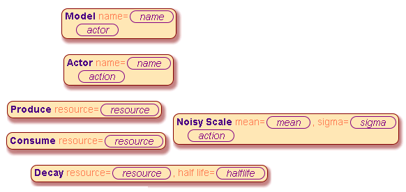

Economic Modelling
This document introduces a simple online framework for the creation of economic models and outlines the process of economic modelling itself.
The online editable version of the final model is here: ./model3.economy?play
Table of Contents
1 What is Economic Modelling?
Economic modelling as it is understood in this document is defined by the presence of three separate roles, which interact to gain a common understanding for the prevailing economic situation.
Three roles involved in economic modelling
- The Politician is interested in results and wants to prededict the economic impact of political measures.
- The Economist needs a standardized environment where theories and data can be shared.
- The Developer wants to simulate economic models and visualize results.
2 What is the Meta Model?
The meta model describes the building blocks by which the economist can enter models and structured data. It is the vocabulary that the developer or her simulation software understands.
2.1 A Simple Meta Model in UML
The following UML diagram represents the meta model as UML class diagram. (Click here to edit in LucidChart)
Classes of a simple meta model.
The semantics of these blocks should be defined as follows:
- Model: an economic theory or hypothesis.
- Actor: an actor in that model.
- Action: an action that a actor performs per time period.
- Produce: the action to produce one unite of a resource.
- Consume: the action to consume one unite of a resource.
- Decay: exponential decay of a perishable resource.
- NoisyScale: random variation of involved resource units.
2.2 Building Blocks of the Simple Meta Model
Essentially, the meta model defines blocks, by which an economic model, i.e. assumptions about the economic world, can be created. The above meta model infers the basic primitives below. It also defines, how these blocks can be inserted into each other.

Basic blocks which can be combined to create an economic model.
3 Creating Economic Models
Using the building blocks defined above a range of simple economic models and theories can be defined. The previous meta model defined the scope of possible models, while the economic models themselfs define the actual assumption about the real economy.
3.1 Initial Model Setup
The model creation is done by combining above primitive building blocks into a larger model. This document uses an online editor for model creation, that is found here: ./empty.economy?play. (supported by Firefox/Chrome/iPad).
The initial screen is divided into three sections:
- The menu on the top.
- The code section on the left.
- The execution view on the right
The root element is inserted by pressing "Model" in the menu, or "M" on the keyboard. Then, the selection jumps to the model name. Pressing "Text" in menu, or the "T"-key opens a text input field:
Following the same sequence we can add an actor with the name "producer":
3.2 Constant Croduction
The first complete model consists of an actor that produces one unit of a resource called "apple" per period. This model can be viewed and edited here: ./model1.economy?play
Unsurprisingly, the number of apples increases linearly with time.
3.3 The Perishable Good
The next model state adds an actor called "erosion" that introduces decay to the resources "apple". The model state can be viewed and edited here: ./model2.economy?play
Now, that the resource can not be stored indefinitly, the amount of available goods saturates.
3.4 Optimizing the Consumption Rate
The final state of this example model introduces a third actor named "consumer", who consumes a fixed amount of resources per time. Additionally, the resource production is made random with an average of 8 per time unit. The state of this final model can be viewed and edited here: ./model3.economy?play
With a consumption rate of 6, the available number of resources is positive most of the time, but goes to zero in some of the stochastic paths.
A decreased consumtion rate of 4 leads to a higher average amount of available resource and less risk of short fall. The consumtion rate can easily be modified with the "+1" and "-1" entries in the menu.
4 Conclusion
In a primitive economic model has been shown, that more efficient exploitation of available resources can increase the risk of a crash or a short fall.
This result has been derived in a three step process:
- Defining the meta model, i.e. the vocabulary by which models can be built
- Building a range of toy models that describe different aspects of the economy
- Deriving a feasible economic explanation from the results
Obviously, it all but certain, that this approach scales up to more realistic economic models.